# Read in all necessary libraries
library(tidyverse)
library(here)
library(sf)
library(terra)
library(tmap)
library(spData)
library(spDataLarge)
library(stars)
library(patchwork)Homework 3: Identifying the impacts of extreme weather
Load libraries
Read in data
# Read in roads data with query to only select highways
roads <- st_read(here('data','gis_osm_roads_free_1.gpkg'), query = "SELECT * FROM gis_osm_roads_free_1 WHERE fclass='motorway'")Reading query `SELECT * FROM gis_osm_roads_free_1 WHERE fclass='motorway''
from data source `/Users/elizabethpeterson/Downloads/MEDS/EDS-223/hw3-egp4aq/data/gis_osm_roads_free_1.gpkg'
using driver `GPKG'
Simple feature collection with 6085 features and 10 fields
Geometry type: LINESTRING
Dimension: XY
Bounding box: xmin: -96.50429 ymin: 29.00174 xmax: -94.39619 ymax: 30.50886
Geodetic CRS: WGS 84# Read in houses data with query to only select homes
houses <- st_read(here('data','gis_osm_buildings_a_free_1.gpkg'), query = "SELECT * FROM gis_osm_buildings_a_free_1 WHERE (type IS NULL AND name IS NULL) OR type in ('residential', 'apartments', 'house', 'static_caravan', 'detached')")Reading query `SELECT * FROM gis_osm_buildings_a_free_1 WHERE (type IS NULL AND name IS NULL) OR type in ('residential', 'apartments', 'house', 'static_caravan', 'detached')'
from data source `/Users/elizabethpeterson/Downloads/MEDS/EDS-223/hw3-egp4aq/data/gis_osm_buildings_a_free_1.gpkg'
using driver `GPKG'
Simple feature collection with 475941 features and 5 fields
Geometry type: MULTIPOLYGON
Dimension: XY
Bounding box: xmin: -96.50055 ymin: 29.00344 xmax: -94.53285 ymax: 30.50393
Geodetic CRS: WGS 84# Read in socioeconomic data
texas <- st_read(here('data','ACS_2019_5YR_TRACT_48_TEXAS.gdb'), layer = 'ACS_2019_5YR_TRACT_48_TEXAS')Reading layer `ACS_2019_5YR_TRACT_48_TEXAS' from data source
`/Users/elizabethpeterson/Downloads/MEDS/EDS-223/hw3-egp4aq/data/ACS_2019_5YR_TRACT_48_TEXAS.gdb'
using driver `OpenFileGDB'
Simple feature collection with 5265 features and 15 fields
Geometry type: MULTIPOLYGON
Dimension: XY
Bounding box: xmin: -106.6456 ymin: 25.83716 xmax: -93.50804 ymax: 36.5007
Geodetic CRS: NAD83income <- st_read(here('data','ACS_2019_5YR_TRACT_48_TEXAS.gdb'), layer = "X19_INCOME")Reading layer `X19_INCOME' from data source
`/Users/elizabethpeterson/Downloads/MEDS/EDS-223/hw3-egp4aq/data/ACS_2019_5YR_TRACT_48_TEXAS.gdb'
using driver `OpenFileGDB'# Check class of these terms to make sure they are correct
class(texas)[1] "sf" "data.frame"class(income)[1] "data.frame"# Read in lights data --> there are two separate tiles for the same date
seven_05_tile <- read_stars(here("data/VNP46A1/VNP46A1.A2021038.h08v05.001.2021039064328.tif"))
seven_06_tile <- read_stars(here("data/VNP46A1/VNP46A1.A2021038.h08v06.001.2021039064329.tif"))
sixteen_05_tile <- read_stars(here("data/VNP46A1/VNP46A1.A2021047.h08v05.001.2021048091106.tif"))
sixteen_06_tile <- read_stars(here("data/VNP46A1/VNP46A1.A2021047.h08v06.001.2021048091105.tif"))# Merge the two tiles for the same date to create a workable raster
tile_07 <- rast(st_mosaic(seven_05_tile, seven_06_tile))
tile_16 <- rast(st_mosaic(sixteen_05_tile, sixteen_06_tile))# Check CRS for what we've read in
print(st_crs(houses) == st_crs(texas))[1] FALSEprint(st_crs(tile_07) == st_crs(texas))[1] FALSEprint(st_crs(tile_16) == st_crs(texas))[1] FALSEprint(st_crs(tile_07) == st_crs(tile_16))[1] TRUE# Because the two tile rasters have the same CRS, we will use those as the refernce, and update houses and texas to have that same CRS
houses <- st_transform(houses, st_crs(tile_07))
texas <- st_transform(texas, st_crs(tile_07))# Run another check to make sure all CRS are now equal
# Create a list of all the rasters, and then create a for loop to make sure they all have the same crs, using the CRS of houses as a reference
rast_list <- list(houses,texas,tile_07,tile_16)
reference <- crs(rast_list[[1]])
for (i in 2:length(rast_list)) {
print(crs(rast_list[[i]])==reference)
}[1] TRUE
[1] TRUE
[1] TRUE# Reproject the tiles once more, to make sure plotting will work
tile_07 <- project(tile_07, crs(texas))
tile_16 <- project(tile_16, crs(texas))# Find the change in night lights intensity (presumably) caused by the storm
# Create a difference raster of the difference in intensity of those two nights
diff_rast <- tile_07 - tile_16
diff_rast[diff_rast < 200] <- NA
# Check again that diff_rast is the same crs as the tiles
diff_rast <- project(diff_rast, crs(tile_07))Map the night light intensities before and after the storm and the difference
# Define my own breaks for our scaling for the before and after plots
breaks_tiles <- c(0.1, 1, 10, 100, 200, 300, 400, 500)
colors <- c("lightblue", "darkblue","purple","darkgrey","black")
# Plot using terra, using our defined breaks and colors
plot(tile_07, main = "Night Light Intensity - Before Storm (nW cm^-2sr^-1)", col = colors, breaks=breaks_tiles)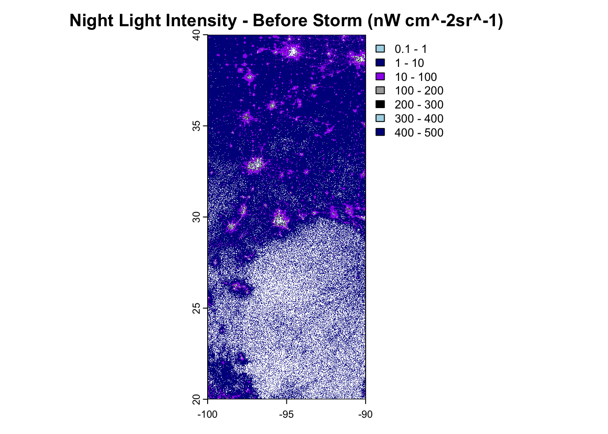
plot(tile_16, main = "Night Light Intensity - After Storm (nW cm^-2sr^-1)", col = colors, breaks=breaks_tiles)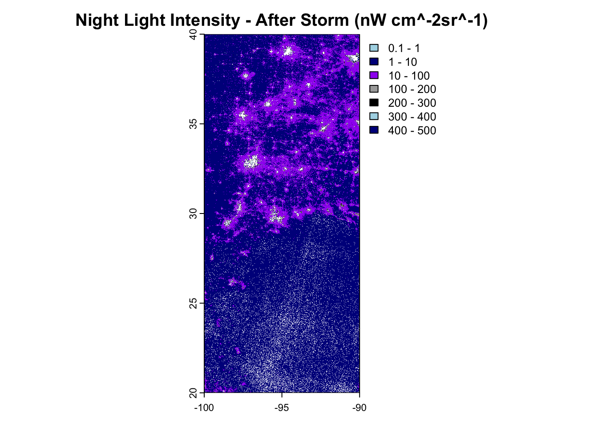
# Vectorize the blackout mask (reclassified difference raster)
# First, convert to polygon so we can use st_as_sf()
blackout_mask_raster <- as.polygons(diff_rast, na.rm = TRUE)
blackout_mask <- blackout_mask_raster %>%
st_as_sf(as_points = FALSE, merge = TRUE) %>%
st_make_valid()# Initial map of blackout mask to make sure reclassification worked
tm_shape(blackout_mask) +
tm_polygons()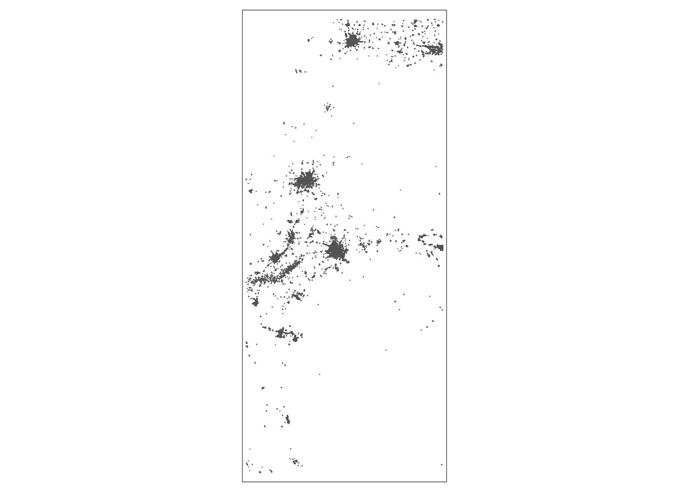
# Crop blackout mask to Houston area
# Create a matrix of our coordinates
bounding_box <- st_bbox(c(xmin = -96.5, xmax = -94.5, ymin = 29, ymax = 30.5),
crs = st_crs(blackout_mask)) %>%
st_as_sfc()
# Change both the mask and bbox to have CRS 3083
blackout_mask <- st_transform(blackout_mask, crs = 3083)
bounding_box <- st_transform(bounding_box, crs = 3083)
# Check that CRS updating worked
print(st_crs(blackout_mask) == st_crs(bounding_box))[1] TRUE# Crop the raster
blackout_cropped <- st_intersection(blackout_mask, bounding_box)
# Make sure there are no invalid geometries
blackout_cropped <- st_make_valid(blackout_cropped)# Plot blackout cropped data to check analysis worked (on top of census data)
tm_shape(texas, bbox = bounding_box) +
tm_polygons() +
tm_shape(blackout_cropped) +
tm_polygons() +
tm_layout(main.title = "Blackout mask within Houston")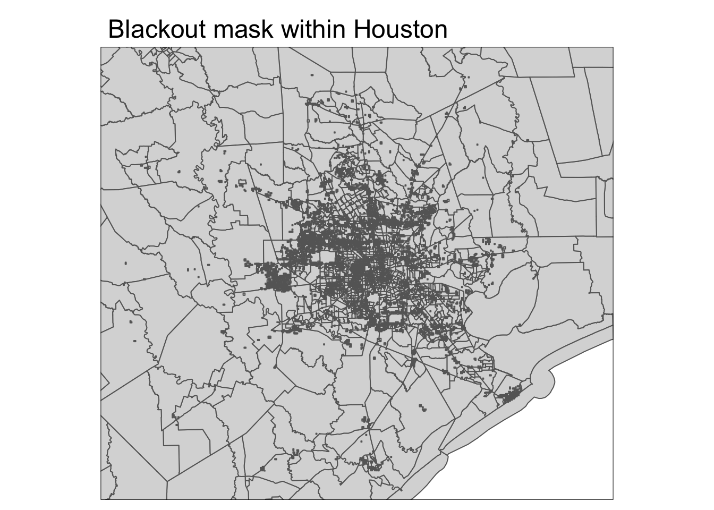
# Check CRS before transformation
print(st_crs(roads)) # Should match CRS of blackout maskCoordinate Reference System:
User input: WGS 84
wkt:
GEOGCRS["WGS 84",
ENSEMBLE["World Geodetic System 1984 ensemble",
MEMBER["World Geodetic System 1984 (Transit)"],
MEMBER["World Geodetic System 1984 (G730)"],
MEMBER["World Geodetic System 1984 (G873)"],
MEMBER["World Geodetic System 1984 (G1150)"],
MEMBER["World Geodetic System 1984 (G1674)"],
MEMBER["World Geodetic System 1984 (G1762)"],
MEMBER["World Geodetic System 1984 (G2139)"],
ELLIPSOID["WGS 84",6378137,298.257223563,
LENGTHUNIT["metre",1]],
ENSEMBLEACCURACY[2.0]],
PRIMEM["Greenwich",0,
ANGLEUNIT["degree",0.0174532925199433]],
CS[ellipsoidal,2],
AXIS["geodetic latitude (Lat)",north,
ORDER[1],
ANGLEUNIT["degree",0.0174532925199433]],
AXIS["geodetic longitude (Lon)",east,
ORDER[2],
ANGLEUNIT["degree",0.0174532925199433]],
USAGE[
SCOPE["Horizontal component of 3D system."],
AREA["World."],
BBOX[-90,-180,90,180]],
ID["EPSG",4326]]print(st_crs(blackout_mask)) # Should match CRS of roadsCoordinate Reference System:
User input: EPSG:3083
wkt:
PROJCRS["NAD83 / Texas Centric Albers Equal Area",
BASEGEOGCRS["NAD83",
DATUM["North American Datum 1983",
ELLIPSOID["GRS 1980",6378137,298.257222101,
LENGTHUNIT["metre",1]]],
PRIMEM["Greenwich",0,
ANGLEUNIT["degree",0.0174532925199433]],
ID["EPSG",4269]],
CONVERSION["Texas Centric Albers Equal Area",
METHOD["Albers Equal Area",
ID["EPSG",9822]],
PARAMETER["Latitude of false origin",18,
ANGLEUNIT["degree",0.0174532925199433],
ID["EPSG",8821]],
PARAMETER["Longitude of false origin",-100,
ANGLEUNIT["degree",0.0174532925199433],
ID["EPSG",8822]],
PARAMETER["Latitude of 1st standard parallel",27.5,
ANGLEUNIT["degree",0.0174532925199433],
ID["EPSG",8823]],
PARAMETER["Latitude of 2nd standard parallel",35,
ANGLEUNIT["degree",0.0174532925199433],
ID["EPSG",8824]],
PARAMETER["Easting at false origin",1500000,
LENGTHUNIT["metre",1],
ID["EPSG",8826]],
PARAMETER["Northing at false origin",6000000,
LENGTHUNIT["metre",1],
ID["EPSG",8827]]],
CS[Cartesian,2],
AXIS["easting (X)",east,
ORDER[1],
LENGTHUNIT["metre",1]],
AXIS["northing (Y)",north,
ORDER[2],
LENGTHUNIT["metre",1]],
USAGE[
SCOPE["State-wide spatial data presentation requiring true area measurements."],
AREA["United States (USA) - Texas."],
BBOX[25.83,-106.66,36.5,-93.5]],
ID["EPSG",3083]]print(st_crs(bounding_box)) # Should match CRS of blackout mask and roadsCoordinate Reference System:
User input: EPSG:3083
wkt:
PROJCRS["NAD83 / Texas Centric Albers Equal Area",
BASEGEOGCRS["NAD83",
DATUM["North American Datum 1983",
ELLIPSOID["GRS 1980",6378137,298.257222101,
LENGTHUNIT["metre",1]]],
PRIMEM["Greenwich",0,
ANGLEUNIT["degree",0.0174532925199433]],
ID["EPSG",4269]],
CONVERSION["Texas Centric Albers Equal Area",
METHOD["Albers Equal Area",
ID["EPSG",9822]],
PARAMETER["Latitude of false origin",18,
ANGLEUNIT["degree",0.0174532925199433],
ID["EPSG",8821]],
PARAMETER["Longitude of false origin",-100,
ANGLEUNIT["degree",0.0174532925199433],
ID["EPSG",8822]],
PARAMETER["Latitude of 1st standard parallel",27.5,
ANGLEUNIT["degree",0.0174532925199433],
ID["EPSG",8823]],
PARAMETER["Latitude of 2nd standard parallel",35,
ANGLEUNIT["degree",0.0174532925199433],
ID["EPSG",8824]],
PARAMETER["Easting at false origin",1500000,
LENGTHUNIT["metre",1],
ID["EPSG",8826]],
PARAMETER["Northing at false origin",6000000,
LENGTHUNIT["metre",1],
ID["EPSG",8827]]],
CS[Cartesian,2],
AXIS["easting (X)",east,
ORDER[1],
LENGTHUNIT["metre",1]],
AXIS["northing (Y)",north,
ORDER[2],
LENGTHUNIT["metre",1]],
USAGE[
SCOPE["State-wide spatial data presentation requiring true area measurements."],
AREA["United States (USA) - Texas."],
BBOX[25.83,-106.66,36.5,-93.5]],
ID["EPSG",3083]]# Another chance to transform CRS
roads <- st_transform(roads, crs = st_crs(blackout_mask))
blackout_mask <- st_transform(blackout_mask, crs = st_crs(roads))
bounding_box <- st_transform(bounding_box, crs = st_crs(blackout_mask))Exclude highways from the cropped blackout mask
# Create a 200-meter buffer around highways & make sure its crs is correct
roads_buffer <- st_buffer(roads, dist = 200)
roads_buffer <- st_transform(roads_buffer, st_crs(blackout_cropped))
# Make sure there are no issues with invalid geometries
roads_buffer <- st_make_valid(roads_buffer)# Use st_union to combine geometries in the buffer
roads_buffer_union <- st_union(roads_buffer)
tm_shape(roads_buffer_union) +
tm_polygons() +
tm_layout(main.title = "200-meter buffer around highways")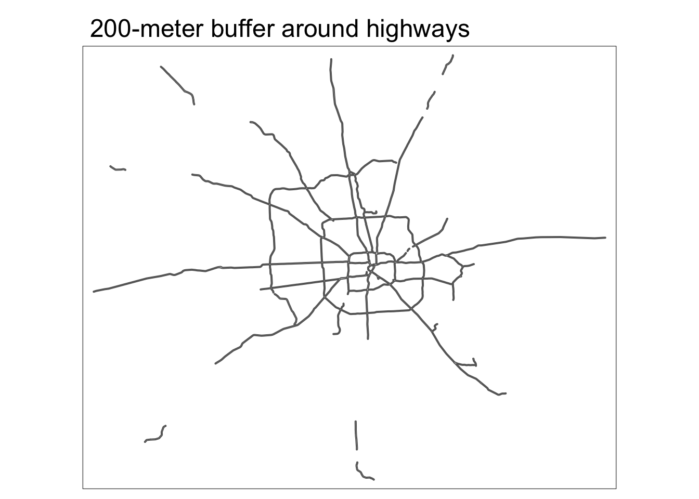
# Exclude areas within 200m of highways using st_difference
blackout_no_highways <- st_difference(blackout_cropped, roads_buffer_union)
# Make sure there are no invalid geometries
blackout_no_highways <- st_make_valid(blackout_no_highways)
# Check result by plotting
tm_shape(blackout_no_highways) +
tm_polygons() +
tm_layout(main.title = "Blackout mask with roads buffer")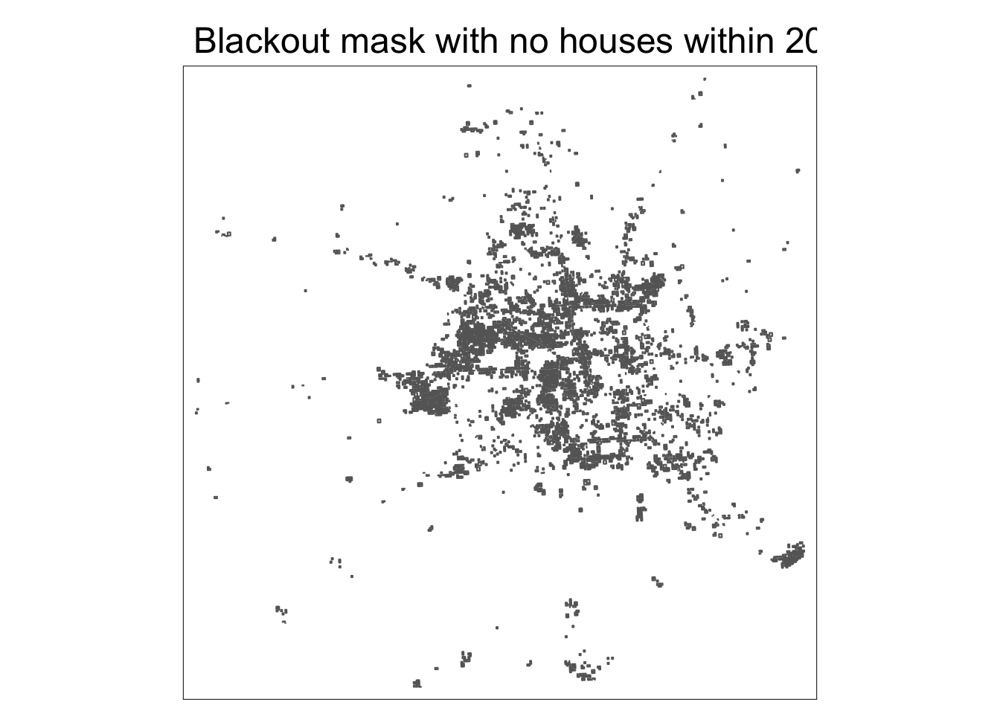
Identify homes likely impacted by blackouts
# Make sure that houses has the same crs as the blackout_no_highways
houses <- st_transform(houses, st_crs(blackout_no_highways))
# Use bracket subsetting to filter
houses_blackout <- houses[blackout_no_highways, ]# Plot the map of homes in Houston that lost power
tm_shape(texas, bbox = bounding_box) +
tm_polygons(col = "lightyellow") +
tm_shape(blackout_cropped) +
tm_borders() +
tm_shape(houses_blackout) +
tm_bubbles(col = "lightblue", size = 0.05) +
tm_layout(main.title = "Houses in Houston that lost power")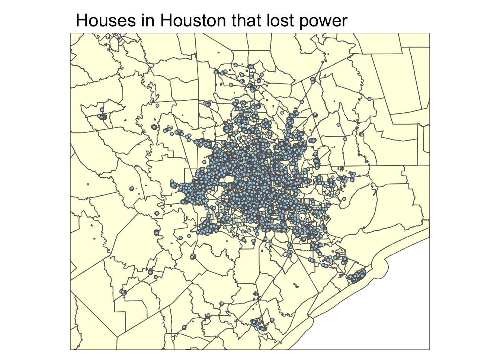
According to our houses_blackout object, it seems that 157,970 houses in Houston experienced a blackout.
Identify the census tracts likely impacted by blackout
# Rename column in income df so we can join
income <- income %>%
rename(GEOID_Data = GEOID)
# Join median household income from previous 12 months to the census tract
texas_with_income <- left_join(texas, income, by = "GEOID_Data")
# Select GEOID and median income column
texas_with_income <- texas_with_income %>%
select(GEOID_Data, B19013e1) %>%
rename(median_income = B19013e1)# Plot the houses that experienced a blackout on top of the median income data
tm_shape(texas_with_income, bbox = bounding_box) +
tm_polygons(col = "median_income",
title = "Median Income") +
tm_layout(legend.outside = TRUE,
legend.width = 0.1) +
tm_shape(houses_blackout) +
tm_bubbles(col = "pink", size = 0.1) +
tm_layout(main.title = "Houses that lost power + median income")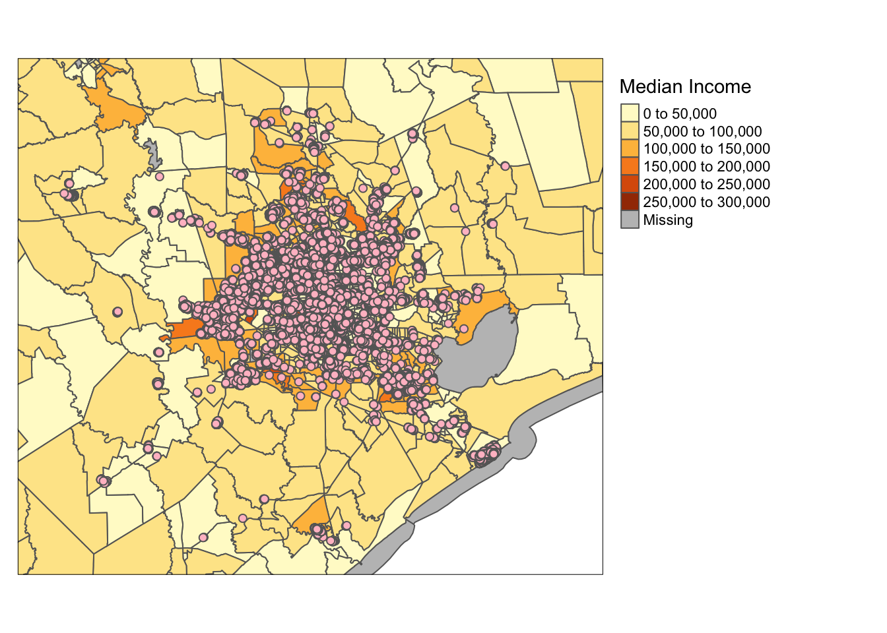
# Make sure CRS of texas_with_income and houses_blackout match
texas_with_income <- st_transform(texas_with_income, crs="EPSG:3083")
houses_blackout <- st_transform(houses_blackout, crs="EPSG:3083")
# Join texas income data with the houses that experienced a blackout
census_blackout_houses <- st_join(texas_with_income, houses_blackout, join = st_contains, largest=TRUE) %>%
filter(fclass=="building")
# Find which specific census tracts have a home that experienced a blackout
houses_blackout_centroid <- st_centroid(census_blackout_houses)# This plot shows us which census tracts in Houston lost power
tm_shape(texas, bbox=bounding_box) +
tm_polygons() +
tm_shape(census_blackout_houses) +
tm_polygons(col = "lightblue") +
tm_layout(main.title = "Census tracts in Houston that lost power")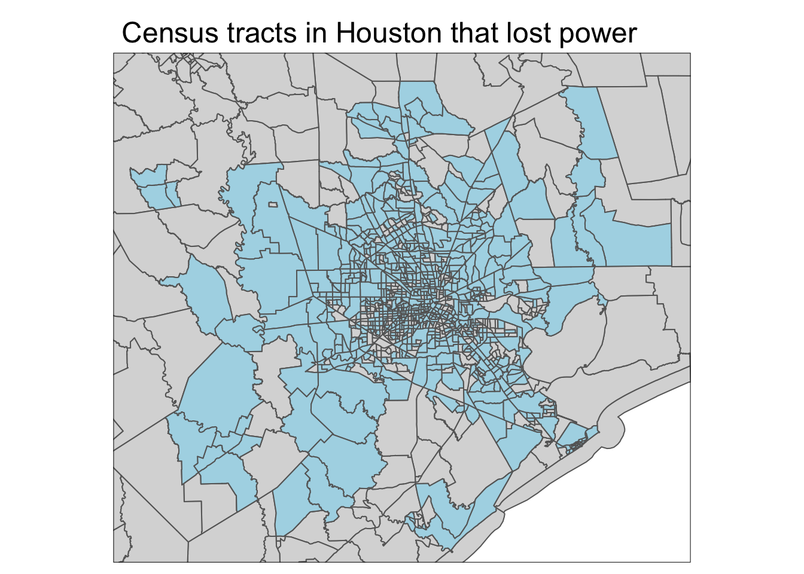
# Plot centroids on top of income data - this shows us a map of the census tracts that experienced a blackout on top of the income data
tm_shape(texas_with_income, bbox = bounding_box) +
tm_polygons(col = "median_income",
title = "Median Income") +
tm_layout(legend.outside = TRUE,
legend.width = 0.1) +
tm_shape(houses_blackout_centroid) +
tm_dots(size = 0.01) +
tm_layout(main.title = "Median Income - Census tracts that experienced a blackout")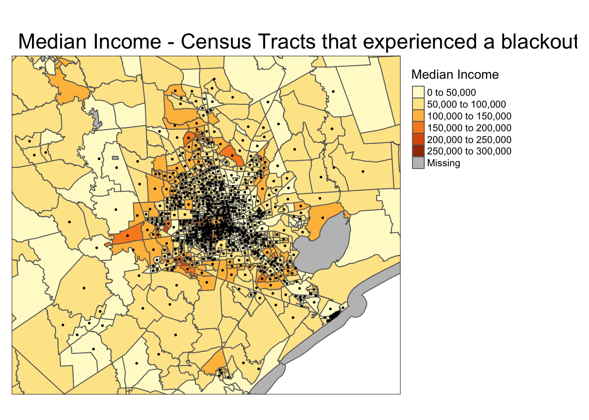
# Compare distribution of median income for census tracts that did and did not experience blackouts
# Select the income of census tracts that experienced a blackout
income_w_blackout <- census_blackout_houses %>%
select(median_income) %>%
st_drop_geometry()
# Select the income of census tracts that did not experience a blackout
# income_wo_blackout <- houses[!houses %in% houses_blackout]
income_wo_blackout <- st_join(texas_with_income, houses_blackout, join = st_contains, largest=TRUE) %>%
filter(is.na(fclass)) %>%
select(median_income) %>%
st_drop_geometry()# Plot a histogram of the median income of the census tracts that did experience a blackout
p1 <- ggplot(data = income_w_blackout, aes(x = median_income)) +
geom_histogram(bins = 50, fill = "blue") +
theme_minimal() +
ggtitle("Median Income: blackout") +
xlab("Median Income ($)") +
ylab("Count")
# Plot a histogram of the median income of the census tracts that did not experience a blackout
p2 <- ggplot(data = income_wo_blackout, aes(x = median_income)) +
geom_histogram(bins = 50, fill = "pink") +
theme_minimal() +
ggtitle("Median Income - No blackout") +
xlab("Median Income ($)") +
ylab("Count")
p3 <- p1 + p2
p3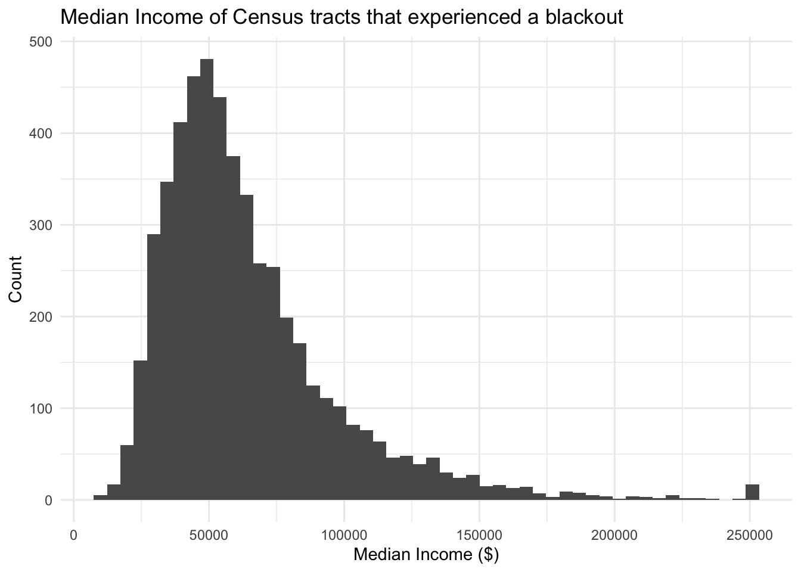
Based on the histograms above, we see that the distribution of median income in the census tracts that did not experience a blackout is skewed higher than those that did experience a blackout. The peak of the histogram for the census tracts that did not experience a blackout is right at 50,000 dollars, whereas the peak of the histogram for the census tracts that did experience a blackout is below 50,000 dollars. This could show some slight favoring towards higher median income households when it comes to blackout preparedness. Limitations could include outside factors that could influence whether or not a house is prepared for the storm.
Sources:
- Wikipedia. 2021. “2021 Texas power crisis.” Last modified October 2, 2021. https://en.wikipedia.org/wiki/2021_Texas_power_crisis.↩︎
- Geofabrik GmbH and OpenStreetMap Contributors. (2018). OpenStreetMap Data. Retrieved from https://www.geofabrik.de.
- U.S. Census Bureau. (n.d.). American Community Survey. U.S. Department of Commerce. Retrieved from https://www.census.gov/programs-surveys/acs